Menos casas.
Más comunidad.
Seis casas
Una manzana
Seis casas sobre una manzana entera de Villa Allende Golf, con cuatro calles alrededor y los árboles grandes que ya estaban.
Lo que trae el barrio
Todo lo que no se ve desde la vereda.
-
Estacionamiento de cortesía
Lugares para visitas dentro del barrio.
-
Parquización y espacios verdes
Los árboles adultos del borde quedaron donde estaban.
-
Seguridad y cámaras
Monitoreo automatizado del conjunto.
-
Control de acceso inteligente
Acceso controlado para propietarios y visitas.
-
Servicios subterráneos
Infraestructura integral enterrada, sin tendido aéreo.
-
Expensas eficientes
Seis casas reparten el mantenimiento de las áreas comunes.
-
En el corazón de Villa Allende
A pocas cuadras del Villa Allende Golf.
-
Casas de una planta
Ambientes amplios, sin escaleras.
-
Patios propios extensos
Entre 502 y 790 m² de terreno por casa.
-
Dos ingresos
Para entrar y salir sin cruzarse.
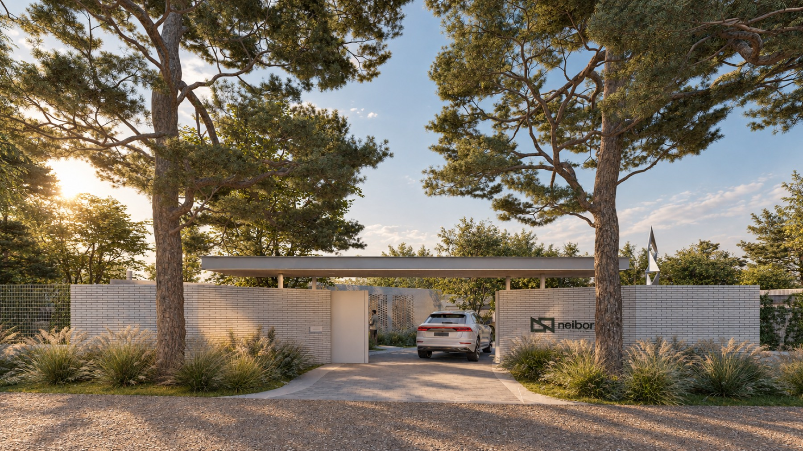
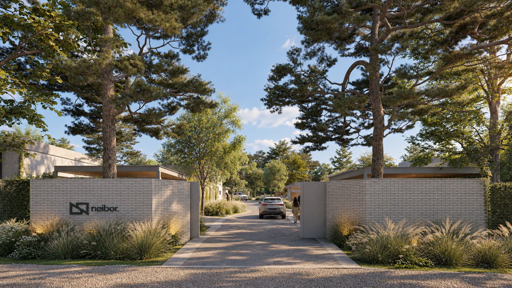
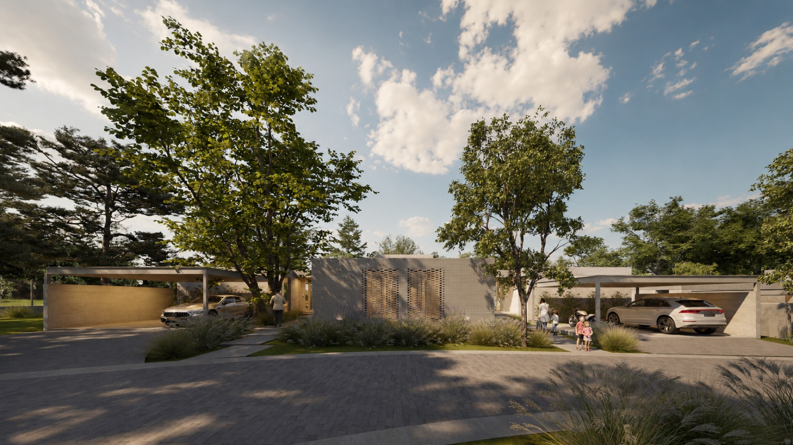
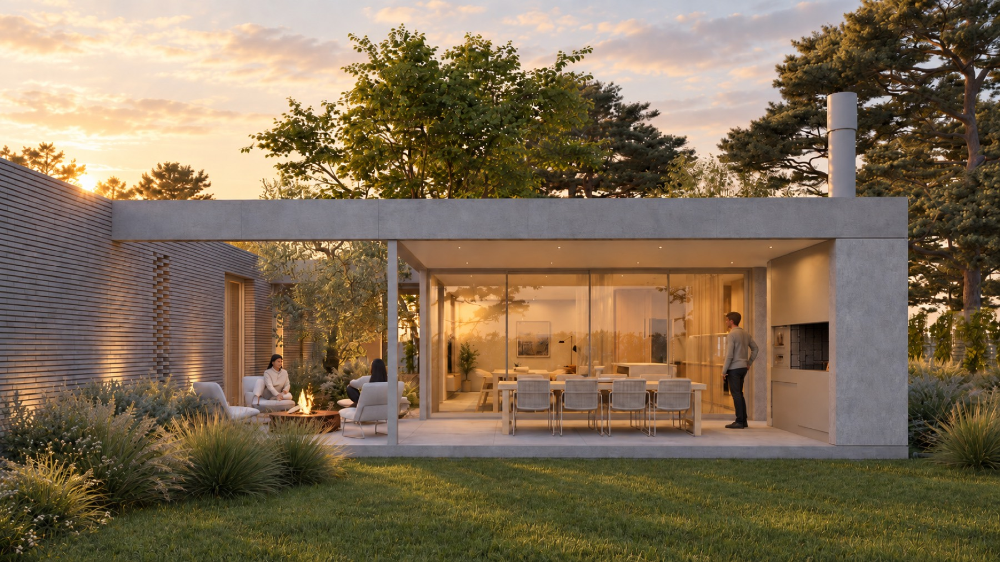
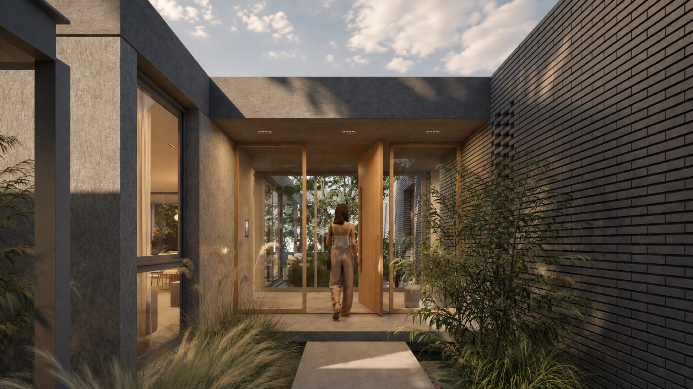
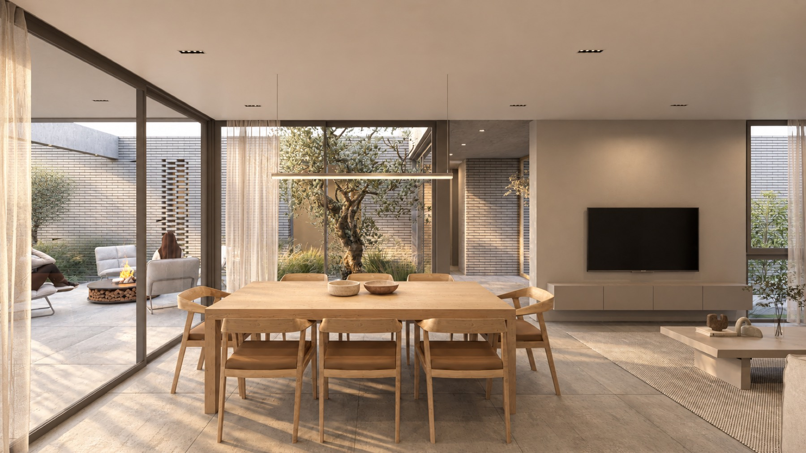
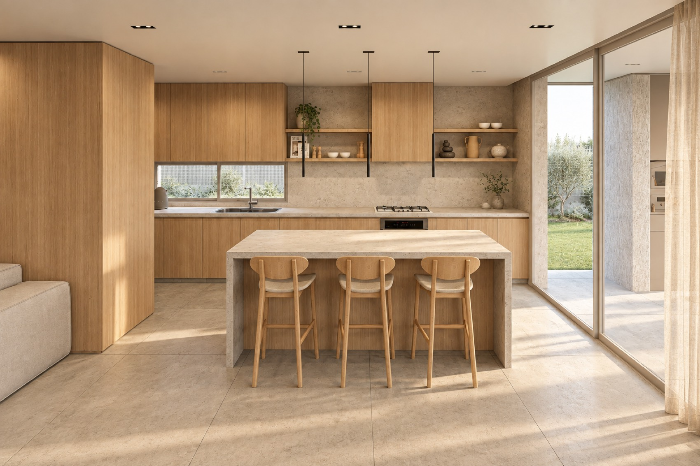
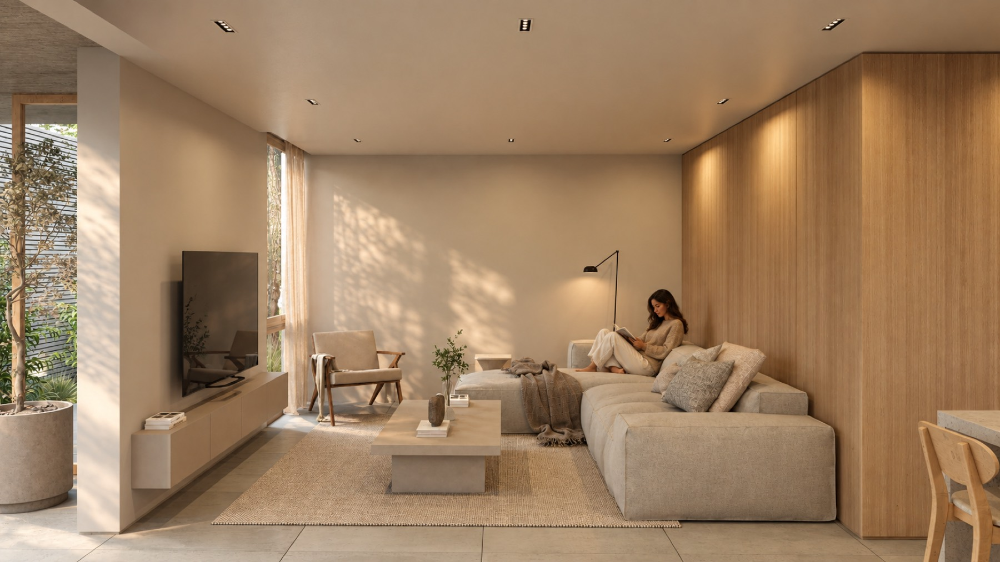
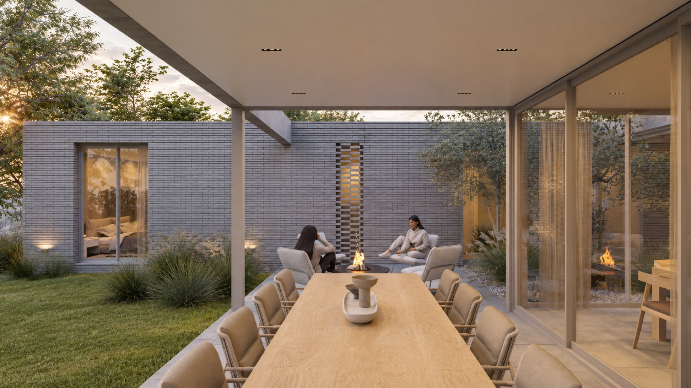
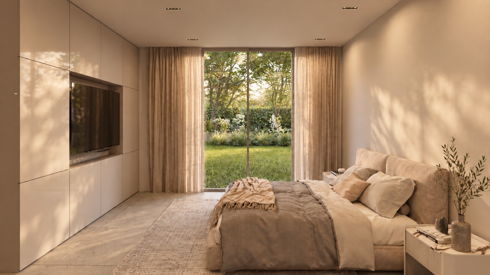
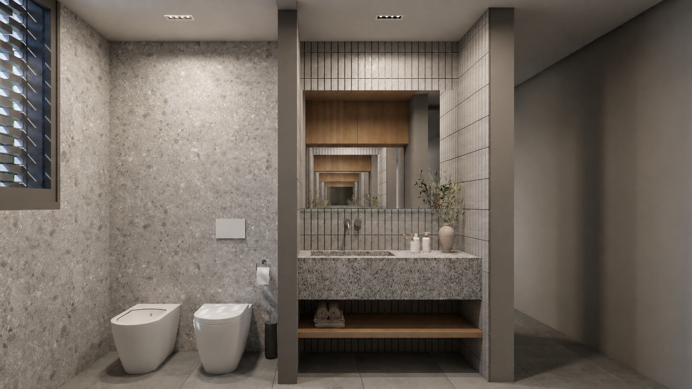

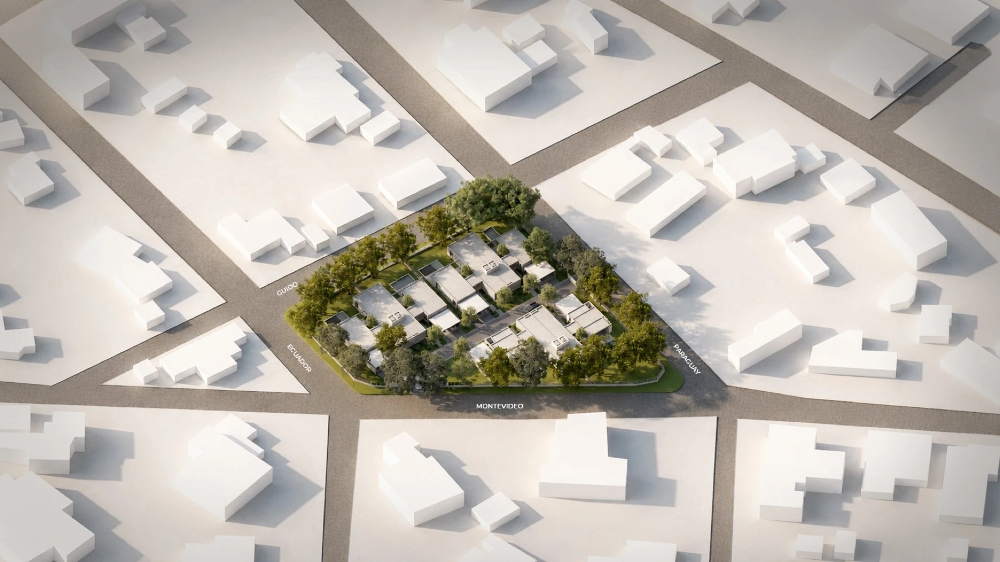
Casa N
Consultar- Orientación del fondo
- Noreste
- Terreno propio
- 711 m²
- Superficie cubierta
- 161 m²
- Semicubierta
- 67 m²
- Superficie total
- 228 m²
- Dormitorios
- 3, uno en suite con vestidor
- Cochera
- Doble, bajo losa
- Plano
- Ver el plano de la casa
- Valor
- Pendiente
Superficies tomadas de los planos de cada casa. La posición de cada letra sobre el plano se dedujo de la orientación de fondo declarada. Pendiente: valores y estado de disponibilidad por unidad

El barrio del futuro se parece al de antes.
Córdoba, Arg.
Las ciudades crecen, los desarrollos se agrandan y los vecinos quedan cada vez más lejos. Neibor va en la dirección contraria. Seis casas por manzana es una decisión de escala: la cantidad justa para que una comunidad se conozca entera, comparta una calle interna y siga teniendo cada una su propio fondo.
Un housing tiene propietarios.
Un barrio tiene vecinos.

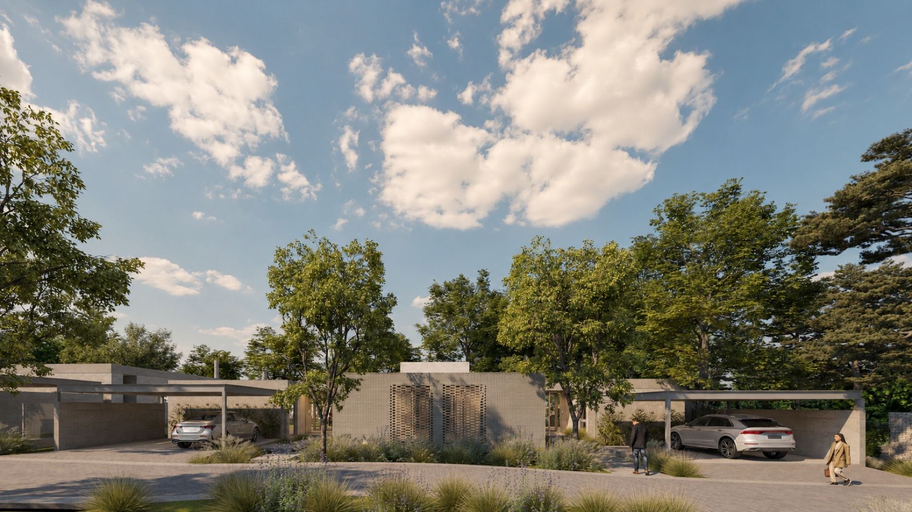
-
01 / La manzanaUna manzana entera, con cuatro calles alrededor
Villa Allende creció con dos trazados que no terminan de coincidir. Donde se cruzan quedó esta manzana en cuña, rodeada por Ecuador, Guido, Paraguay y Montevideo. Esa forma irregular da origen al símbolo de Neibor y ordena todo el proyecto.
-
02 / La calleUna calle que no lleva a ningún lado
Las seis casas se apoyan sobre el perímetro y dejan el centro libre. La calle interna tiene dos ingresos y termina en las casas, así que por ahí no pasa nadie más. Los árboles adultos del borde quedaron donde estaban.
-
03 / El loteCada casa con su terreno y su fondo
Los lotes son escriturables y ninguno comparte fondo con otro. Todos dan contra la línea de árboles del borde.
502 a 790 m²De terreno224 a 241 m²Por casa -
04 / La pielLadrillo gris a la vista
Un solo material resuelve el frente completo, en aparejo corrido y sin revoque encima. Sobre el ingreso, ese mismo ladrillo se abre en celosía: de noche deja pasar la luz hacia la calle, y la mirada no.
-
05 / El techoLosa de hormigón que vuela
Las cubiertas son planas y de hormigón visto. Vuelan sobre el ingreso, sobre la cochera y sobre la galería, y la misma pieza es estructura, alero y cielorraso.
-
06 / La llegadaSe entra y ya se ve el fondo
Una puerta pivotante de madera, tan alta como el paño de vidrio que tiene al lado. El piso de hormigón alisado arranca acá, cruza la casa y sigue afuera bajo la galería, sin cambio de nivel.
-
07 / El patioUn olivo en el medio de la casa
Entre el ingreso y el estar hay un patio propio. Ilumina la casa por el centro, sin abrir una ventana a la calle.
-
08 / El díaCocina, comedor y estar en un solo tiro
La isla mira al comedor y el comedor mira al jardín. El vidrio llega al piso y al techo en dos orientaciones, así que el ambiente recibe luz de dos lados durante todo el día.
-
09 / La nocheLos dormitorios dan al fondo
Tres dormitorios, con el principal en suite y vestidor. El ventanal abre contra el jardín y ninguna habitación mira a la calle.
-
10 / La galeríaLa casa se estira hasta el fondo
La galería está al mismo nivel y con el mismo piso que el comedor, con asador y fogón sobre el césped. En verano el comedor sigue afuera.
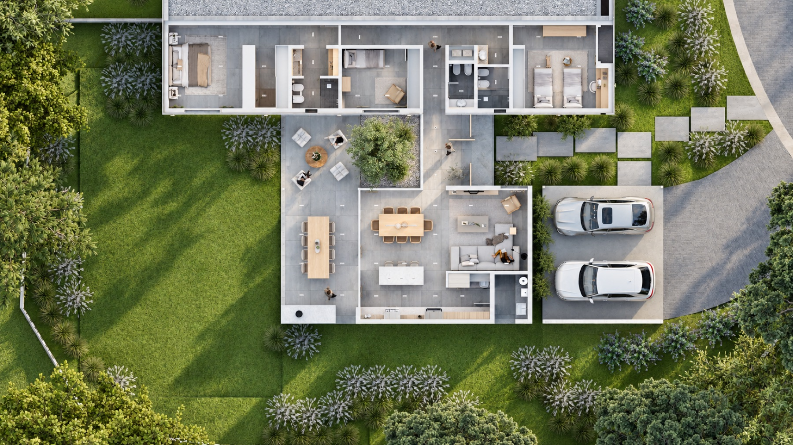
Imágenes de proyecto. Mobiliario, equipamiento y parquización de carácter ilustrativo.
Qué entra en cada casa
- Cochera doble
- Dormitorio principal con vestidor y baño en suite
- Dos dormitorios secundarios
- Dos baños y un toilette
- Cocina, comedor y living integrados
- Lavadero con tender
- Galería con asador
- Espacio de guardado y depósito
- Calefacción central
- Aberturas de vidrio doble
Ver especificaciones técnicas
Fundación y estructura
Pilotes a más de 10 m de profundidad con vigas de fundación de hormigón armado. Estructura sismorresistente: mampostería de bloque cerámico portante del 18, columnas y vigas de hormigón armado visto, encadenados horizontales y verticales, losas de hormigón armado visto y de viguetas.
Terminación exterior
Revoque grueso y revear gris. Vigas de hormigón armado a la vista. Terminaciones en ladrillo gris Corblock.
Terminación interior
Paredes y techo con yeso enlucido y pintura látex interior satinado color Nube. Piso general de porcelanato 100x100 símil cemento. Piso de baño y box de ducha en porcelanato a definir.
Equipamiento sanitario
Baño con sanitarios Ferrum Veneto, griferías Piazza Arq monocomando y bacha Deca rectangular slim de apoyo o similar. Cocina con bacha Johnson Quadra Max 70 y grifería Piazza Kitchen Pro monocomando o similar. Lavadero con bacha Johnson A40 y grifería Piazza Gourmet monocomando.
Instalación sanitaria
Tanque chato de 2.000 litros, cañería de agua por termofusión y cañería cloacal IPS. Termotanque a gas de 120 litros y bomba presurizadora de 200 W. Recolección de agua de lluvia con cisterna de 2.750 litros y sistema de riego integrado.
Instalación eléctrica
Canalización de PVC, cableado, tomas y teclas Cambre S XXI, tablero completo y artefactos de iluminación interior LED. Canalización prevista para alarma, cámaras y futura domotización.
Carpintería de aluminio
Aluminio Enkel color anodizado con DVH templado 6+12+6. Línea Modena anodizado con DVH templado 6+12+6.
Equipamiento fijo
Amoblamiento de cocina, lavadero y baños en melamina color gris cubanito, roble y arcilla, con canto de PVC de 2 mm y bisagras de cierre suave. Mesadas de cocina, lavadero y baños en Pura Prima Limestone de 12 mm.
Climatización
Preinstalación de aire acondicionado en los tres dormitorios y en el estar comedor. Calefacción central por losa radiante con caldera y zonificación en dos zonas, social y privada.
Sentirse lejos, aun estando cerca.

La manzana está dentro del trazado consolidado de Villa Allende Golf. Alrededor hay casas bajas, lotes grandes y arbolado adulto. El campo de golf aparece a pocas cuadras sobre el mismo trazado y las Sierras Chicas cierran el horizonte hacia el oeste.
- Villa Allende GolfA pocas cuadras
- Av. UniversitariaAcceso del sector
- Sierras ChicasAl oeste
- Córdoba capitalPendiente
El enlace abre una búsqueda sobre la esquina de Ecuador y Guido. Pendiente: coordenadas exactas del predio


Referencias tomadas de la planimetría de proyecto. Pendiente: distancias y tiempos verificados a puntos de interés
Tres firmas detrás de seis casas.
El desarrollo y la construcción están a cargo de GRAB, el proyecto es de Autónomo y la comercialización la llevan GRAB y Calsina Hnos. Al ser seis unidades, la conversación es corta: se habla directo con quien construye.
GRAB
Desarrolla y comercializaAutónomo
ProyectoCalsina Hnos.
ComercializaPendiente: logotipos de GRAB, Autónomo y Calsina en vectorial
-
Reserva de la unidad
Se firma la reserva de la casa elegida. El importe entregado se imputa al precio total al momento de formalizar la operación.
-
Exclusividad por plazo
La reserva es exclusiva durante el plazo acordado y queda sujeta a la firma posterior de la documentación correspondiente.
-
Documentación definitiva
Elección de unidad, forma de pago, plazos y condiciones particulares se detallan en la documentación final.
Condiciones según el modelo de reserva del proyecto. Pendiente: fiduciaria o escribanía interviniente, plazo de obra y fecha de entrega, permisos de construcción
Diseñamos seis casas. El barrio lo hacen ustedes.
Dejá tus datos y te escribimos con valores, forma de pago y disponibilidad actualizada. Si preferís, escribís directo por WhatsApp y hablás con Lucas.
- WhatsAppEscribir al equipo comercial
- Correoinfo@grab.com
- DóndeVilla Allende Golf, Córdoba, Argentina
Pendiente: WhatsApp diferenciado de GRAB y de Calsina